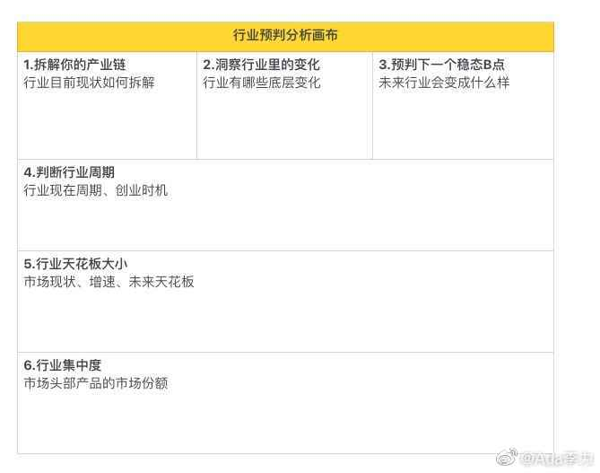

#创业#我以为自己要用一周时间完成“行业预判分析画布”，因为要收集资料分析什么的，网上搜了些资料才发现水分很大，一份报告要价8000元左右，但从目录上看信息离谱得很。其中一份报告列了行业的头部公司，完全没有代表性。做这些报告的咨询公司也是那种从来没听说过的机构，估计是找的在校学生，从网上搜资料，剪刀加浆糊拼凑出来的报告吧。
看了这些报告目录，倒增强了我的信心，我知道的东西，比那些杂牌咨询公司出的报告上的内容要多。有些关键数据，我去可信网站上一样能找到。而一些行业内部情况和数据，我也比那些杂牌咨询公司要清楚。
其实如果在任何一个行业里呆过三年，你对这行业的认知和储备，都要比研究员强。之前听某位做医疗投资的证券人士的讲座，他说对医美很感兴趣也有研究，但他所说的所有信息都是我已知的，而我已知的，他未必知道。不过我找到质量最高的一份报告是证券公司出的。
有了自信，我以为要一周时间完成的画布，两个小时完成了。
看了这些报告目录，倒增强了我的信心，我知道的东西，比那些杂牌咨询公司出的报告上的内容要多。有些关键数据，我去可信网站上一样能找到。而一些行业内部情况和数据，我也比那些杂牌咨询公司要清楚。
其实如果在任何一个行业里呆过三年，你对这行业的认知和储备，都要比研究员强。之前听某位做医疗投资的证券人士的讲座，他说对医美很感兴趣也有研究，但他所说的所有信息都是我已知的，而我已知的，他未必知道。不过我找到质量最高的一份报告是证券公司出的。
有了自信，我以为要一周时间完成的画布，两个小时完成了。
- 